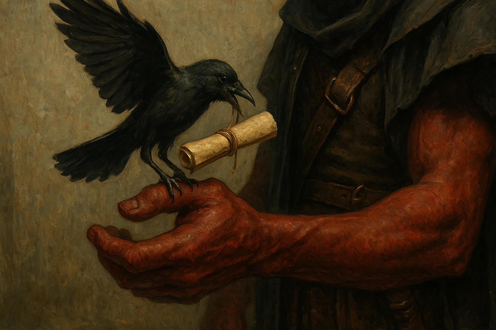
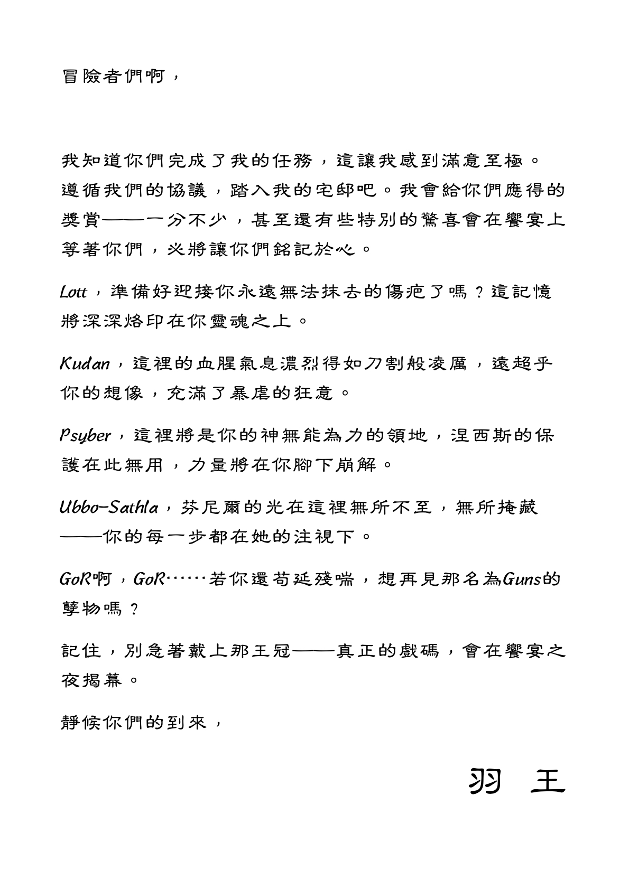

Chapter 3: Lord of the Feathers
The Cave of Drogsland


The Cave of Drogsland
15051.05.10
冒險者們雖然暫時脫困，卻仍然找不到逃離洞穴的方法。卓茲克爵士眼看只有庫登能和他對話，感到有些無趣。在他一陣操弄下，其他冒險者都能看見與聽見他了，除了賽柏外，他一愣一愣的看著，不清楚到底大家到底在進行什麼對話。
卓茲克爵士提起了烏犧奧泥，表示這位在庫登心中似乎挺重要的烏犧奧泥，其實也是卓茲克家族的一員，並詢問庫登是否想知道關於烏犧奧泥更多事？在對於烏犧奧泥是誰這件事上，羅特感到十分好奇，但卻遭到庫登表現出不滿的眼神，兩人發生了些爭執，連烏波看到也覺得十分有趣，加入了這場小混戰。
接著庫登便自己跑到旁邊休息，暫時不管卓茲克爵士與其他人了。不過卓茲克爵士依舊留給他一個可能有用的關鍵字「角塔角塔」。他說他看見烏犧奧泥悠閒地坐在角塔，但他也不知道角塔在什麼地方，只知道那是他的所在地。
冒險者們也試圖研究他們拿到的皇冠，羅特和庫登差一點抵擋不了皇冠的誘惑，想戴在頭上，但都被及時阻止。然而烏波觸碰皇冠時，卻什麼反應都沒有。GoR則和賽柏提議，離開洞穴後，他們可以來偽造這個皇冠，把實體留下來，贗品拿給委託人，藉此大賺一筆。
休息過後，冒險者們繼續尋找出口。原本通往從宅邸下降到洞穴那塊區域的路被巨石給封住，暫時沒辦法直接過去。烏波爬上了洞穴頂部，發現了一個小縫隙，但這個縫隙似乎只有他能通過。於是庫登透過了魔法，叫喚出了幾個隕石，將地洞的天花板打破，由烏波爬上去後拉著繩子，讓大家可以攀繩而上。
大家陸續爬上去後，終於回到了宅邸的一樓，但卻發現通往宅邸外的門竟然打不開。冒險者們試圖攻擊們，卻只悠悠聽見卓茲克爵士的碎念，說著怎麼能就這樣讓大家闖進又闖出他的宅邸？此時，連賽柏也能看見與聽見他了。
冒險者們對著卓茲克爵士發起攻擊，卻發現爵士似乎對於他們的攻擊沒有受到多大的影響。反之，爵士的回擊卻非常重，甚至讓他們感到十分恐懼。在大家艱困的戰鬥後，最終，爵士化為狀似玻璃的碎片，落在了卓茲克宅邸的地板上。庫登拾起碎片，看見烏犧奧泥在這裡活動的片段，接著，玻璃碎片便消失了。
宅邸往外的門輕鬆推開，午後的陽光依然刺眼。
冒險者們走在卓茲蘭的路上，但只有烏波注意到一隻烏鴉正朝著他們飛來。烏鴉停在羅特手上，他的腳上綁著一封信。羅特小心翼翼的解開綁在烏鴉腳上的細繩，卻意外傷到烏鴉的腳，腳掌應聲掉落，烏鴉則化為碎片，消失了。
羅特打開捲起的信，唸了出來：

羅特憶起過去接這名委託人的案件時，都是由他的代理人，一位名叫低語，穿著斗篷，難以分別其性別、年齡或任何特徵的下屬來交代事項、索取物品，和領取報酬，因此他對於「羽王」這個名字完全不了解。但對於信中提及「永遠無法抹去的傷疤」，令他感到不寒而慄。
讀完這封信，羅特的腦中瞬間浮現了一座陰暗的宅邸。
他知道怎麼到那個地方去。
15051.05.10
Although the adventurers were temporarily freed, they still could not find a way to escape from the cave. Seeing that only Kudan could talk to him, Sir Drozik felt a little bored. After a while of his manipulation, other adventurers could see and hear him. Except for Psyber, he stared blankly, not knowing what conversation everyone was having.
Sir Drozik mentioned Usioni, saying that Usioni, who seemed to be very important in Kudan's heart, was actually a member of the Drozik family, and asked Kudan if he wanted to know more about Usioni? Lott was very curious about who Usioni was, but received a dissatisfied look from Kudan. The two had some disputes. Even Ubbo found it very interesting when he saw it and joined the little melee.
Then Kudan ran to the side to rest, ignoring Sir Drozik and the others for the time being. However, Sir Drozik still left him with a potentially useful keyword "Horn Tower". He said he saw Usioni sitting leisurely on the corner tower, but he didn't know where the corner tower was, only that it was where he was.
The adventurers also tried to study the crowns they obtained. Lott and Kudan almost couldn't resist the temptation of the crowns and wanted to wear them on their heads, but they were stopped in time. However, when Ubbo touched the crown, nothing happened. GoR and Psyber suggested that after leaving the cave, they could forge the crown, keep the entity, and give the fake to the client, thereby making a lot of money.
After resting, the adventurers continued to look for the exit. The road that originally led to the area that descended from the mansion to the cave was blocked by huge rocks, making it impossible to go directly there for the time being. Ubbo climbed to the top of the cave and found a small gap, but it seemed that only he could pass through it. So Kudan summoned several meteorites through magic and broke the ceiling of the cave. Ubbo climbed up and pulled the rope so that everyone could climb up the rope.
After everyone climbed up one after another, they finally returned to the first floor of the mansion, but found that the door leading to the outside of the mansion could not be opened. The adventurers tried to attack them, but they could only hear Sir Drozik's broken thoughts, saying how could he just let everyone break in and out of his mansion like this? At this point, even Psyber could see and hear him.
The adventurers attacked Sir Drozik, but found that Sir Drozik seemed not to be affected much by their attacks. On the contrary, Jazz's counterattack was very heavy, even making them feel very scared. After everyone fought hard, Jazz finally turned into glass-like shards and fell on the floor of Drozik's mansion. Kudan picked up the fragments and saw a fragment of Usioni moving here, and then the glass fragments disappeared.
The door to the outside of the mansion was easily opened, and the afternoon sun was still dazzling.
The adventurers were walking on the road of Drogsland, but only Ubbo noticed a crow flying towards them. The crow alighted on the hand of Lott, who had a letter tied to his foot. Lott carefully untied the string tied to the crow's feet, but accidentally injured the crow's feet. The soles of the feet fell off, and the crow turned into pieces and disappeared.
Lott opened the rolled-up letter and read out:
Lott recalled that when he took on this client's cases in the past, his agent, a subordinate named Whisper who wore a cloak and whose gender, age or any characteristics were difficult to distinguish, handed over matters, requested items, and received rewards. Therefore, he did not understand the name "Feather King" at all. But the letter's reference to "scars that can never be erased" made him shudder.
After reading this letter, a gloomy mansion instantly appeared in Lott's mind.
He knows how to get to that place.